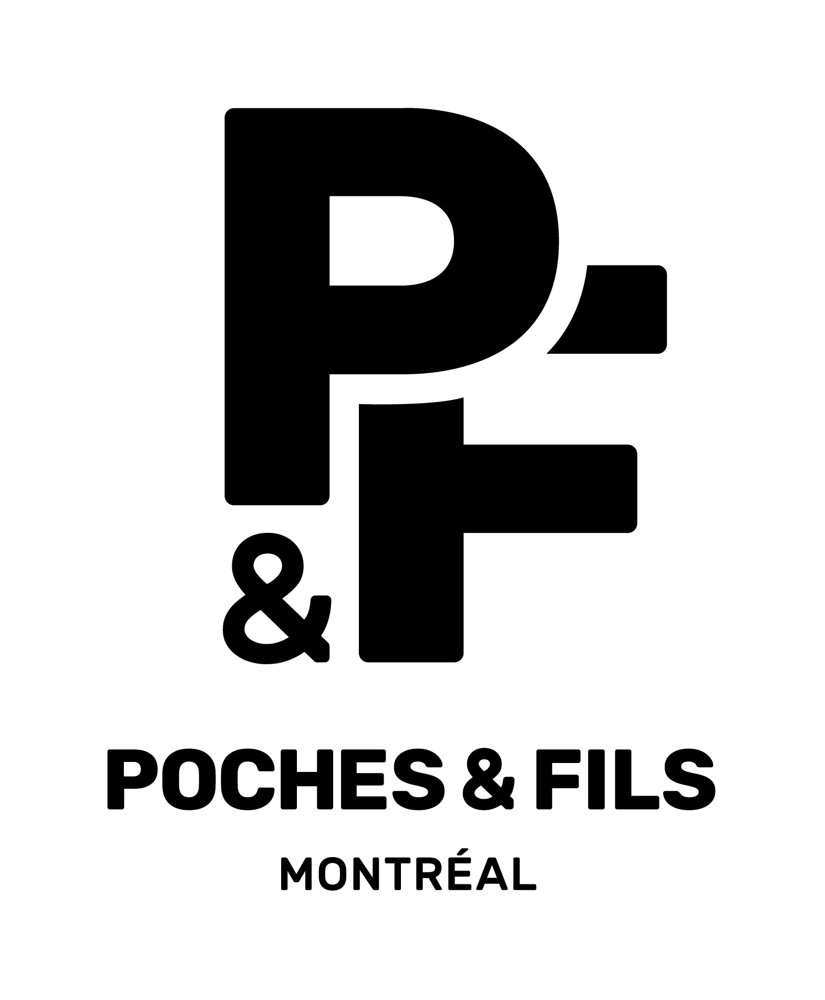
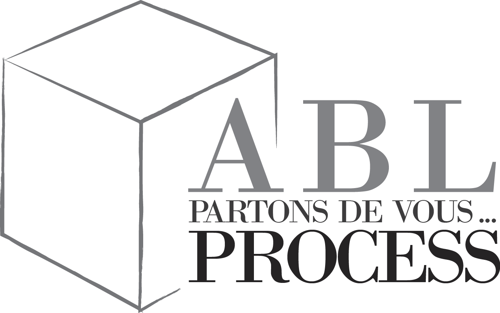

MY
PORTE-
FOLIO


Learn more


I was introduced to web development in my baccalauréat year, and it has been a key focus of mine ever since. My journey has involved exploring various technology stacks through my academic coursework and personal projects. I have consistently enjoyed the process of learning and applying new technologies, which has allowed me to adapt and stay current in this fast-paced field. This continuous learning and practical application have equipped me with a broad and adaptable skill set, ready to tackle the diverse challenges that come with web development projects.
Throughout my academic journey, I have dedicated myself to the in-depth study of different programming languages, enabling me to develop a strong foundation in data manipulation, as well as in devising complex solutions in mathematics and physics. I have had the opportunity to apply these skills in various projects where I honed my ability to code efficiently and innovatively. This experience has not only equipped me with robust technical skills but has also taught me the importance of analytical approaches and creative problem-solving in software development.


At the beginning of my apprenticeship, I was introduced to the field of Data Science, which quickly captivated my interest. I seamlessly integrated these newfound skills with my existing knowledge, focusing on developing comprehensive applications that leverage AI capabilities. Driven by a profound curiosity and a desire to deepen my expertise in data, I made a deliberate choice to specialize in Data Engineering for my M2 year. This decision was fueled by my commitment to not only understanding the intricacies of data processing and analysis but also applying this knowledge in creating innovative, data-driven solutions
Graduate from Baccalauréat français in science, mathematical speciality.
It was also this year that I have been introduced to the web development and I immediately loved it!

skills unlocked:
Started my journey to Canada at Polytechnique Montreal in Software engineering program where I studied for 3 years.
It was also there that I studied my very first development language: C++!

skills unlocked:

I have been introduce to back end development with the company Poche&Fils for who I worked on their online shop.
skills unlocked:

I decided to participate to an intense web development bootcamp in English at LeWagon in Montreal.
I studied all the aspects from web development (UI, UX, Front-end, Back-end).

For the final project of this bootcamp I had the chance to work in team for a real client ask. We developed disciplined trader, a tool to help a group of trader to communicate and set their weekly strategy.
skills unlocked:


I came back to France and decided to pursue my Engineering degree at Efrei Paris!
This year I developed as a "Projet transverse" a web app that allow Efrei student to access easily to their course syllabus
of their current semester.
skills unlocked:

I had the opportunity to study abroad in computer science for a semester at AGH Krakow-Poland!

skills unlocked:


I am developing a static website for the company ABL process
 This year as a "Projet transverse", my teammates and I are developing a chat which follows the asymmetrical encryption rules and have the template of Discord.
I also have been selected to continue my degree in an apprenticeship program in software engineering.
skills unlocked:

Admited in apprenticeship program, It allows me to started my professional journey at Airbus Defence & Space while finishing my education. Here I discovered Data field subjects while continuing to expend my repertoire of web development skills.

skills unlocked: